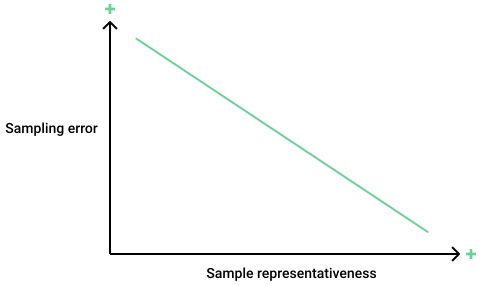

pacman::p_load(
readr,
dplyr,
tibble,
ggplot2
)
ds <- read_csv("datasets/wnba.csv")Loading the dataset
- The dataset description wnba dataset at kaggle
Sampling Error
- In sampling we target to use samples to explain population parameters
- Different samples will give different estimates of population parameters
- The difference between population parameters and sample estimates is known as sampling error
- Statistics - sample summaries
- Parameters - population summaries
sampling error = parameter - statistic
Getting a sample from a dataset
- use the
sample()function
sample(df$col, size=n)
set.seed()is used to make random sampling reproducible
Task 1
- Find the maximum number of games played in the whole dataset
parameter - Use the
sample()to random sample 30 playerssample - Find the maximum number of games played in the sample
statistic - Calculate the sampling error
sampling_error
Solution 1
parameter <- max(ds$Games_Played, na.rm = T)
set.seed(1)
sample <- sample(ds$Games_Played,30)
statistic <- max(sample, na.rm = T)
sampling_error = parameter - statisticRepresentative Sample
- Samples with a small sampling error are considered representative

- The sample should be selected randomly from the population.
Random Sample
- Every individual has an equal chance of being picked.
- Can be archived by generating random numbers and use them to pick individuals from the population
Sampling with(out) Replacement
- Using the
sample()can extract samples from a dataset with or without replacement - The default is
replace = FALSE - A particular sample can not be drawn more than once during a sampling event
sample_n() function
- From
dplyrpackage - Can be used to sample rows from multiple columns
- Unlike the
sample()which samples observations from a single column (vector)
set.seed() function
- Uses a pseudorandom number generator
pseudorandom number generator uses an initial value to generate a sequence of numbers that has properties similar to those of a sequence that is truly random. The purpose of this is to start a random sequence that can be reproduced later.
- When you use
set.seed()you will get same results repeatedly.
Base r replicate() function
Used for repeated evaluation of an epression
replicate(n,expr)expris a function call or formula
Replicate 100 samples
Task 2
Generate a vector of 100 random sample means for the PTS column, with a sample size of 10.
- Set the random seed to 1.
- Use
replicate()to generate a vector of 100 random sample means of sample size 10.- Save the results of the analysis as mean_points.
- Calculate the minimum value of mean_points, and save as minimum.
- Calculate the maximum value of mean_points, and save as maximum.
Solution 2
set.seed(1)
# Mean for one sample
mean(sample(ds$PTS,10))[1] 171.4# Mean for 100 samples
sample_means <- replicate(100,mean(sample(ds$PTS,10)))
minimum <- min(sample_means)
maximum <- max(sample_means)Visualizing the sample_means
x <- 1:100
df <- tibble(x,sample_means)
ggplot(data = df,
aes(x = x, y = sample_means )) +
geom_point() +
geom_hline(yintercept = mean(ds$PTS),
color = "blue") +
ylim(90, 310)+
theme_classic()Remarks
- we can see that the sample means vary a lot around the population mean.
Remarks
- Because of the high variation, there is a good chance we get a sample mean that is not representative of the population.
Remarks
- Increasing the sample size addresses the problem
- Increasing the sample size the sample means vary less
- Chances of getting unrepresentative sample decreases
Remarks
Remarks
Simple random sampling isn’t a reliable sampling method when the sample size is small. Because sample means vary a lot around the population mean, there’s a good chance we’ll get an unrepresentative sample
When we do simple random sampling, we should try to get as large a sample as possible. A large sample decreases the variability of the sampling process, which, in turn, decreases the chances that we’ll get an unrepresentative sample